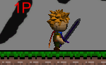
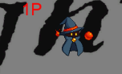
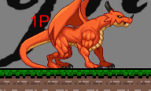

制作人数
1人
制作内容
開発環境
Windows11
Unity:2021.3.34f1 Personal
概要
インターネットに接続されている環境のみ起動できる1対1の対人専門の格闘ゲームです。 サーバーを作った側が1P,サーバーに入った側が2Pとなります。 ゲームが開始されたら、キャラクターを選択し、攻撃を相手に当てることで相手側のHPを減らすことができます。 HPが0になると、ゲームが終了し[1PKO!]のように負けた側の名前が表示されます。 画面外に出るとペナルティでHPが0となりゲームオーバーになります。
制作期間
2024年3月~2024年9月
制作にかかった期間
6ヵ月
制作に至った背景
現在のゲーム市場では、通信対戦やオンラインプレイが求められる作品が 注目を集めており、インターネットとの連携が重要となっています。 そこで、インターネットを介したマルチプレイ対応の格闘ゲームを制作することで、 アクションゲームやRPGなど他のジャンルのマルチプレイ機能を取り入れた ゲーム制作の基盤を築くことを目指し制作することを決意しました。
担当した分野の詳細
ネットワーク・サーバー構築
あのゲームの作り方Web版 氏のLobbyとRelayを連携してマルチプレイゲームを完成させる[Unity]
を参考にマルチプレイゲームができる環境を構築しました。参考にした理由は、
ユーザーがIDを直接入力するなどの複雑な操作が求められないため、簡単な操作のみで
インターネットに接続されている状態のPCがあればゲームウィンドウ2つで遊ぶことができるからです。
また、プラットフォームに依存しないため、インターネットに接続されている状態のPC複数台を利用して遊ぶことができます。
- 改良・調整を施した（オリジナリティ）例として
- ロビーを作成時に入室の不具合が発生した時のために ロビー作成時から一定時間操作が無いと消去される時間を短くしたこと
- 作成したロビーをボタン操作で消去可能にしたこと
- ゲーム内の同期処理を行うべきデータ量が大きくなり、処理が間に合わず通信が解除される不具合を解消するために、 処理間隔を長く設定することで、処理に余裕を持たせたこと
が挙げられます。
基本操作
WASDと十字キーで移動。Jで攻撃。Kでガード。また、戦士のみLで前転が可能です。
ゲームシーン内操作:1戦士.2魔法使い.3ドラゴンを選択できます。
タイトルシーン内操作:ボタンでロビーの作成と削除、更新が可能です。

戦士
前転・上攻撃・下攻撃を持ち器用な戦い方ができます。

魔法使い
浮遊しており、自在に移動することができます。時間が経過する毎に上方向に働く力が強くなり制御が困難になります。耐久力は低いです。

ドラゴン
地上のみ移動できます。攻撃範囲が広く、耐久力が高いです。
キャラクターセレクト
- キャラクターが戦士のみでは、勝敗がプレイヤーの操作能力に強く依存して
してしまうという問題を解決するために、キャラクターを追加しました。
- ゲームが開始されるとタイトル画面内で変化させたキャラクターセレクトのデータが
反映されないという問題を解決する技術が足りず、ゲーム開始後にキャラクターセレクトを
行うという発想に至りました。
- ボタン又はキーボードの1,2,3のいずれかで1P,2Pの操縦可能なオブジェクトに
キャラクターの体とキャラクターの持つ特性・技等の情報が
非同期処理と同期処理の組み合わせで受け渡しされています。
こだわり・苦労した点
写真
左上から順に
- CreateLobbyボタンを押した、後にRefleshボタンを押したことでロビーが作成されたことを確認した状態の画像
- ゲームスタート時の画像
- キャラクターを選択した後の画像
- 勝敗がついた画像
使用素材元様
DOT ILLUST ぴぽや倉庫 ローズミルクティー様（BOOTH）,ゲーム用モンスター素材 Dungeon Mason様,RPG Tiny Hero Duo PBR Polyart B.G.M,RPG BGM - Dungeon leohpaz様,RPG Essentials Sound Effects - FREE! LiteEffectStudio様,FireEffectVol.1 Kakky様,KY Magic Effects Free 効果音ラボ